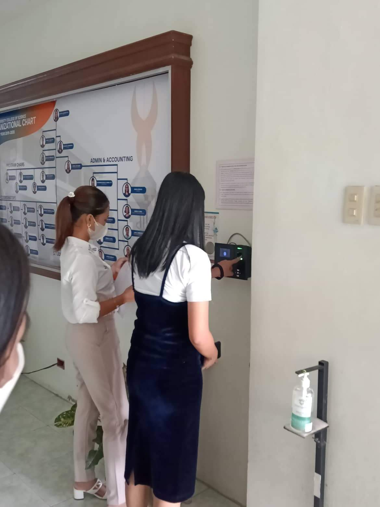
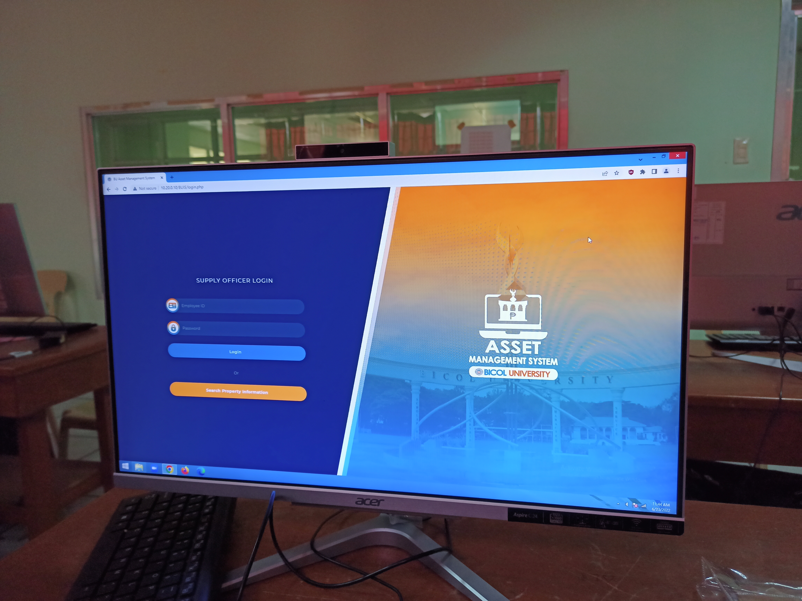

Week 1: The Start

The start of the midyear semester filled us both with excitement and uneasy feeling. It is because we are nervous on what will happen to our on-the-job training.
Our first week started by orientation and introductions. Prof. Rommel Evan J. Paje, our OJT coordinator, introduced us to Dr. Aris Ordoñez. We will be staying in his office for the next six weeks. Dr. Aris is the director of Infomation Communication and Technology Office of Bicol University. I am happy that I was deployed in his office together with 14 other students.
 After the introductions, we are tasked to arrange the computers thet we will use. The first pic is the PC assigned to me. Next, Ma'am Maegel assisted us in using the biometrics for checking in and out of the office. This automatically monitors the number of hours we already completed. It was a pretty fun experience.  The next day, we are introduced to our facilitators - Ma'am Maegel and Ma'am Emerald. They explained the requirements needed to complete the OJT as well as our tasks. Our primary task is to help in data migration. There is already as system and we need to fill it with data from different colleges. The system is an inventory system that keep track of all the asset of the univeristy. I am so excited to learn this thing and to explore more.The first week was amazing. I got to see my classmates again and know people from bloc B. I am looking forward for the coming weeks.